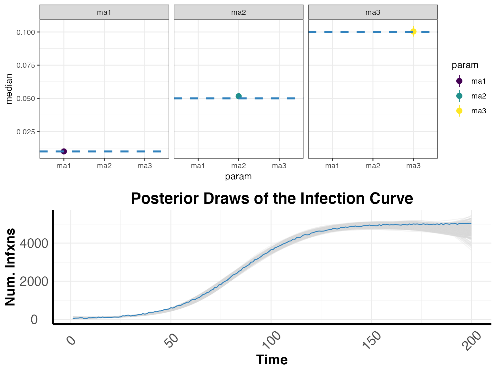
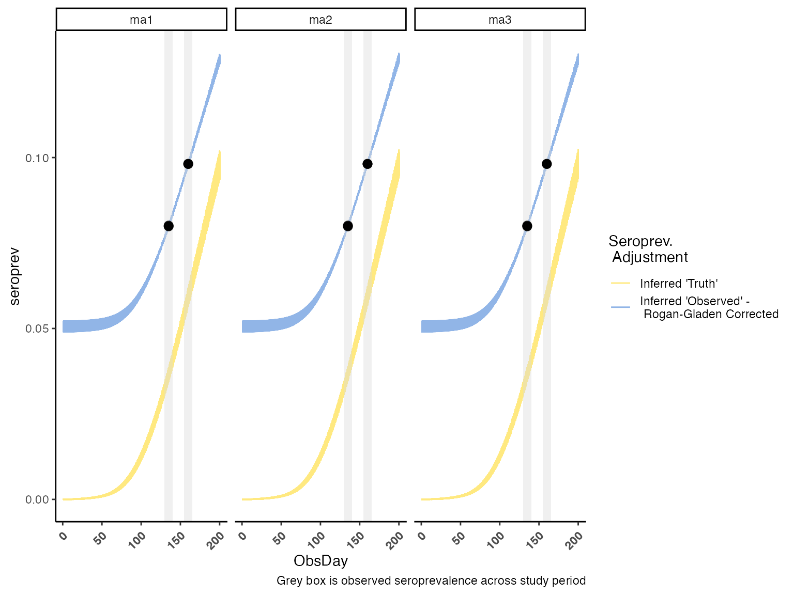
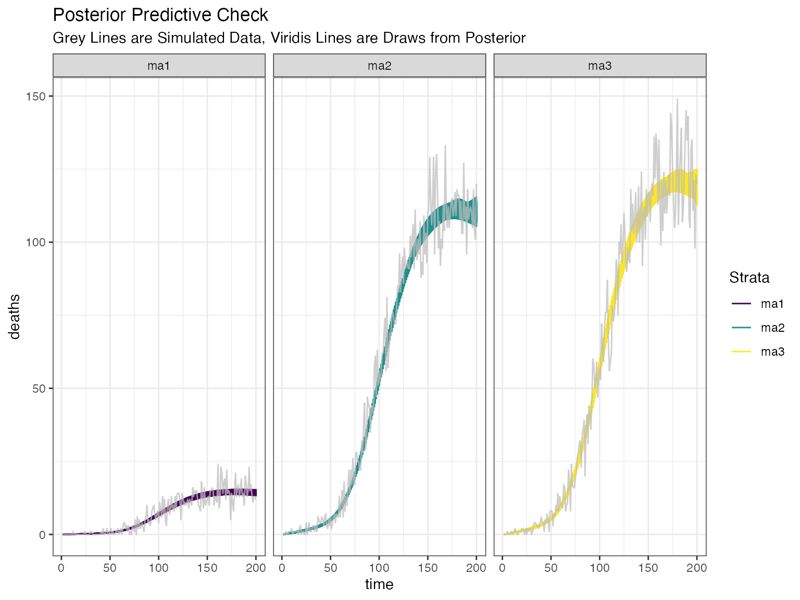

runningmodel.RmdCOVIDCurve PurposeThe purpose of this package is to provide a framework to fit age-specific infection fatality ratios (IFRs) during an epidemic using seroprevalence data to track cumulative infections. The model was originally designed in response to the COVID-19 pandemic (hence the name) but is broadly applicable.
Here, we will use the model’s “back-end” simulator to create some data. The simulator was built “under the model” and reflects the forward process, or generative process, that underlies the model’s inferential framework.
set.seed(1234)
#............................................................
# Pieces for the Simulation
#...........................................................
# users are required to input their own "infection" curve,
# here we will use a simple sigmoidal function with some noise
infxns <- data.frame(time = 1:200)
sig <- function(x){1 / (1 + exp(-x))}
timevec <- seq(from = -5, to = 7, length.out = nrow(infxns))
infxns$infxns <- sig(timevec) * 5e3 + runif(n = nrow(infxns),
min = -25,
max = 50)
# make up IFR values and attack rates within the three "ma" age groups
fatalitydata <- tibble::tibble(Strata = c("ma1", "ma2", "ma3"),
IFR = c(0.01, 0.05, 0.1),
Rho = 1) # assuming uniform attack rate wrt demographic size
# population sizes
demog <- tibble::tibble(Strata = c("ma1", "ma2", "ma3"),
popN = c(1500000, 2250000, 1250000))
#............................................................
# Running the Simulation Function
#...........................................................
simdat <- COVIDCurve::Agesim_infxn_2_death(
fatalitydata = fatalitydata,
demog = demog,
m_od = 19.8,
s_od = 0.85,
curr_day = 200,
infections = infxns$infxns,
simulate_seroreversion = FALSE,
sens = 0.85,
spec = 0.95,
sero_delay_rate = 18.3
)Our simulated data is now a list with three dataframes: (1) StrataAgg_TimeSeries_Death: stratified daily deaths by age group; (2) Agg_TimeSeries_Death: summed daily deaths (summed across age groups); (3) StrataAgg_Seroprev: daily seroprevalences by age group.
We will now tidy up these simulated data items for the model fitting steps.
# here we are calculating the total proportion of deaths
# within each age group
# proportion deaths
prop_deaths <- simdat$StrataAgg_TimeSeries_Death %>%
dplyr::group_by(Strata) %>%
dplyr::summarise(deaths = sum(Deaths)) %>%
dplyr::ungroup(.) %>%
dplyr::mutate(PropDeaths = deaths/sum(simdat$Agg_TimeSeries_Death$Deaths)) %>%
dplyr::select(-c("deaths"))## `summarise()` ungrouping output (override with `.groups` argument)
# Serologic studies are typically conducted over a few days
# here we have assumed that two time points with 5 days on
# either side of our "midpoint".
# For each study and we will take the average over that time
sero_days <- c(135, 160)
sero_days <- lapply(sero_days, function(x){seq(from = (x-5), to = (x+5), by = 1)})
obs_serology <- simdat$StrataAgg_Seroprev %>%
dplyr::group_by(Strata) %>%
dplyr::filter(ObsDay %in% unlist(sero_days)) %>%
dplyr::mutate(serodaynum = sort(rep(1:length(sero_days), 11))) %>%
dplyr::mutate(
SeroPos = ObsPrev * testedN,
SeroN = testedN ) %>%
dplyr::group_by(Strata, serodaynum) %>%
dplyr::summarise(SeroPos = mean(SeroPos),
SeroN = mean(SeroN)) %>% # seroN doesn't change
dplyr::mutate(SeroStartSurvey = sapply(sero_days, median) - 5,
SeroEndSurvey = sapply(sero_days, median) + 5,
SeroPos = round(SeroPos),
SeroPrev = SeroPos/SeroN,
SeroLCI = NA,
SeroUCI = NA) %>%
dplyr::select(c("SeroStartSurvey", "SeroEndSurvey", "Strata", "SeroPos", "SeroN", "SeroPrev", "SeroLCI", "SeroUCI")) %>%
dplyr::ungroup(.) %>%
dplyr::arrange(SeroStartSurvey, Strata)## `summarise()` regrouping output by 'Strata' (override with `.groups` argument)We will now make our model fitting object.
#......................
# put binomial data in correct format
#......................
inputdata <- list(obs_deaths = simdat$Agg_TimeSeries_Death,
prop_deaths = prop_deaths,
obs_serology = obs_serology)
#......................
# Prior distrubitions and sampling distributions
#......................
# sens/spec
sens_spec_tbl <- tibble::tibble(name = c("sens", "spec"),
min = c(0.5, 0.5),
init = c(0.85, 0.95),
max = c(1, 1),
dsc1 = c(850.5, 950.5),
dsc2 = c(150.5, 50.5))
# delay priors
tod_paramsdf <- tibble::tibble(name = c("mod", "sod", "sero_con_rate"),
min = c(18, 0, 16),
init = c(19, 0.85, 18),
max = c(20, 1, 21),
dsc1 = c(19.8, 2550, 18.3),
dsc2 = c(0.1, 450, 0.1))
# make param dfs
ifr_paramsdf <- tibble::tibble(name = c("ma1", "ma2", "ma3"),
min = rep(0, 3),
init = rep(0.2, 3),
max = rep(0.4, 3),
dsc1 = rep(0, 3),
dsc2 = rep(0.4, 3))
infxn_paramsdf <- tibble::tibble(name = paste0("y", 1:5),
min = rep(0, 5),
init = rep(2, 5),
max = rep(10, 5),
dsc1 = rep(0, 5),
dsc2 = rep(10, 5))
knot_paramsdf <- tibble::tibble(name = paste0("x", 1:4),
min = c(2, 50, 100, 150),
init = c(5, 75, 125, 175),
max = c(49, 99, 149, 200),
dsc1 = c(2, 50, 100, 150),
dsc2 = c(49, 99, 149, 200))
noise_paramsdf <- tibble::tibble(name = c("ne1", "ne2", "ne3"),
min = rep(0.5, 3),
init = rep(1, 3),
max = rep(1.5, 3),
dsc1 = rep(1, 3),
dsc2 = rep(0.05, 3))
# bring together
df_params <- rbind.data.frame(ifr_paramsdf, infxn_paramsdf, noise_paramsdf, knot_paramsdf, sens_spec_tbl, tod_paramsdf)
#......................
# make model for serorev and regular
#......................
# reg
mod1 <- COVIDCurve::make_IFRmodel_age$new()
mod1$set_MeanTODparam("mod")
mod1$set_CoefVarOnsetTODparam("sod")
mod1$set_IFRparams(paste0("ma", 1:3))
mod1$set_maxMa("ma3")
mod1$set_Knotparams(paste0("x", 1:4))
mod1$set_Infxnparams(paste0("y", 1:5))
mod1$set_Noiseparams(c(paste0("ne", 1:3)))
mod1$set_Serotestparams(c("sens", "spec", "sero_con_rate"))
mod1$set_data(inputdata)
mod1$set_demog(demog)
mod1$set_paramdf(df_params)
mod1$set_rcensor_day(.Machine$integer.max) # no censoring
start <- Sys.time()
modout <- COVIDCurve::run_IFRmodel_age(IFRmodel = mod1,
reparamIFR = FALSE,
reparamInfxn = FALSE,
reparamKnot = FALSE,
burnin = 1e4,
samples = 1e4,
chains = 3,
rungs = 1,
thinning = 0,
silent = TRUE)
end <- Sys.time() - startHere we will run a very fast MCMC that took only 4. However, with much larger models containing 10,000 burn-in and sampling iterations across 50 rungs, run times can exceed 24-36 hours. These large runs will require a cluster.
(ifr <- COVIDCurve::get_cred_intervals(IFRmodel_inf = modout, whichrung = paste0("rung", 1),
what = "IFRparams", by_chain = F))## # A tibble: 3 x 10
## param min LCI median mean UCI max ESS GewekeZ GewekeP
## <chr> <dbl> <dbl> <dbl> <dbl> <dbl> <dbl> <dbl> <dbl> <dbl>
## 1 ma1 0.00883 0.00943 0.0100 0.0100 0.0107 0.0114 437. 1.05 0.231
## 2 ma2 0.0478 0.0496 0.0516 0.0516 0.0538 0.0557 106. 0.565 0.340
## 3 ma3 0.0934 0.0965 0.100 0.100 0.105 0.108 116. 0.712 0.310
(sero <- COVIDCurve::get_cred_intervals(IFRmodel_inf = modout, whichrung = paste0("rung", 1),
what = "Serotestparams", by_chain = F))## # A tibble: 3 x 10
## param min LCI median mean UCI max ESS GewekeZ GewekeP
## <chr> <dbl> <dbl> <dbl> <dbl> <dbl> <dbl> <dbl> <dbl> <dbl>
## 1 sens 0.816 0.831 0.849 0.850 0.871 0.885 121. -0.281 0.383
## 2 sero_con_rate 17.9 18.1 18.3 18.3 18.5 18.7 3116. 0.538 0.345
## 3 spec 0.947 0.948 0.949 0.949 0.951 0.952 65.2 -1.29 0.173
# the below posteriors are usually only needed for infetion curves
# and posterior checks
(knotspost <- COVIDCurve::get_cred_intervals(IFRmodel_inf = modout, whichrung = paste0("rung", 1),
what = "Knotparams", by_chain = F))
(infxn <- COVIDCurve::get_cred_intervals(IFRmodel_inf = modout, whichrung = paste0("rung", 1),
what = "Infxnparams", by_chain = F))
(ddelays <- COVIDCurve::get_cred_intervals(IFRmodel_inf = modout, whichrung = paste0("rung", 1),
what = "DeathDelayparams", by_chain = F))
(neparams <- COVIDCurve::get_cred_intervals(IFRmodel_inf = modout, whichrung = paste0("rung", 1),
what = "Noiseparams", by_chain = F))Here we can downsample from the posterior to get a sense of our inferred infection curve.
curve <- COVIDCurve::draw_posterior_infxn_cubic_splines(IFRmodel_inf = modout,
whichrung = paste0("rung", 1),
by_chain = F,
by_strata = F,
dwnsmpl = 1e3)
#......................
# some extra plot items
#......................
# tidy up and make plots
liftover <- data.frame(param = c("ma1", "ma2", "ma3"),
Strata = c("ma1", "ma2", "ma3"))
fatalitydataplot <- fatalitydata %>%
dplyr::left_join(liftover, ., by = "Strata")
plot1 <- ggplot() +
geom_pointrange(data = ifr, aes(x = param, ymin = LCI, ymax = UCI, y = median, color = param)) +
geom_hline(data = fatalitydataplot, aes(yintercept = IFR, group = param), color = "#3182bd", linetype = "dashed", size = 1.1) +
facet_wrap(.~param) +
scale_color_viridis_d() +
theme_bw()
plot2 <- curve$plotObj +
geom_line(data = infxns, aes(x = time, y = infxns), color = "#3182bd")
cowplot::plot_grid(plot1, plot2, ncol = 1, nrow = 2)
Similarly, we can downsample from the posterior to get a sense of our inferred serology across age groups.
serocurve <- COVIDCurve::draw_posterior_sero_curves(IFRmodel_inf = modout,
whichrung = paste0("rung", 1),
by_chain = F,
dwnsmpl = 1e3)
#......................
# tidy up posterior draw
#......................
serocurvedat <- serocurve %>%
dplyr::select(c("sim", "ObsDay", dplyr::starts_with("RG_pd_"),
dplyr::starts_with("crude_pd_"))) %>%
tidyr::pivot_longer(., cols = -c("sim", "ObsDay"),
names_to = "seroprev_strata_lvl", values_to = "seroprev") %>%
dplyr::mutate(seroprevlvl = ifelse(stringr::str_detect(seroprev_strata_lvl, "RG_"), "RG Corr.", "Crude"),
param = stringr::str_extract(seroprev_strata_lvl, "ma[0-9]+"))
SeroPrevObs <- tibble::tibble(obsdaymin = sapply(sero_days, median) - 5,
obsdaymax = sapply(sero_days, median) + 5)
#......................
# observed
#......................
# quickly add in binomial confidence intervals
inputdata$obs_serology <- inputdata$obs_serology %>%
dplyr::mutate(SeroLCI = purrr::map2_dbl(.x = SeroPos, .y = SeroN,
.f = function(x,y){ binom.test(x,y)$conf.int[1] }),
SeroUCI = purrr::map2_dbl(.x = SeroPos, .y = SeroN,
.f = function(x,y){ binom.test(x,y)$conf.int[2] })) %>%
dplyr::mutate(midpoint = (SeroStartSurvey + SeroEndSurvey)/2)
# curve data
serocurvedat %>%
ggplot() +
geom_line(aes(x = ObsDay, y = seroprev, color = seroprevlvl), alpha = 0.5) +
geom_rect(data = SeroPrevObs, aes(xmin = obsdaymin, xmax = obsdaymax, ymin = -Inf, ymax = Inf),
fill = "#d9d9d9", alpha = 0.4) +
geom_pointrange(data = inputdata$obs_serology,
aes(x = midpoint, y = SeroPrev, ymin = SeroLCI, ymax = SeroUCI),
color = "#000000", alpha = 0.8) +
facet_wrap(.~param) +
scale_color_manual("Seroprev. \n Adjustment", values = c("#FFD301", "#246BCF"),
labels = c("Inferred 'Truth'", "Inferred 'Observed' - \n Rogan-Gladen Corrected")) +
labs(caption = "Grey box is observed seroprevalence across study period") +
theme_classic() +
theme(axis.text.x = element_text(angle = 45, vjust = 0.90, hjust= 1, face = "bold"))
Finally, we can see how closely our modelled deaths align with the oberserved deaths as a posterior check.
postdeaths <- COVIDCurve::posterior_check_infxns_to_death(IFRmodel_inf = modout,
dwnsmpl = 1e2,
by_chain = FALSE)
postdeaths.plotObj <- postdeaths %>%
dplyr::select(c("time", dplyr::starts_with("deaths"))) %>%
tidyr::gather(., key = "Strata", value = "deaths", 2:ncol(.)) %>%
dplyr::mutate(Strata = gsub("deaths_", "", Strata)) %>%
ggplot() +
geom_line(aes(x= time, y = deaths, group = Strata, color = Strata)) +
scale_color_viridis_d()
postdeaths.plotObj +
geom_line(data = simdat$StrataAgg_TimeSeries_Death, aes(x=ObsDay, y = Deaths, group = Strata), color = "#bdbdbd", size = 0.5, alpha = 0.75) +
facet_wrap(.~Strata) +
theme_bw() +
ggtitle("Posterior Predictive Check", subtitle = "Grey Lines are Simulated Data, Viridis Lines are Draws from Posterior")